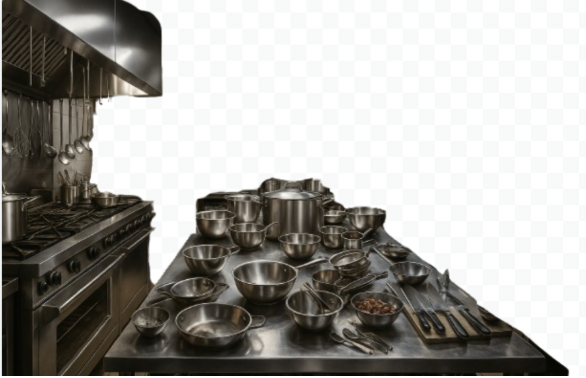

Sobre o Restaurante Allure
Localizada no Batel restaurante Allureoferece uma experiência gastronômica única, unindo a tradição da culinária italiana ao conforto e sofisticação de um ambiente acolhedor.
Nossa missão é: "Oferecer uma experiência gastronômica italiana autêntica, unindo tradição, sabor e hospitalidade."
Contamos com uma equipe apaixonada pela culinária italiana, dedicada a preparar pratos que unem tradição, sabor e criatividade. Nosso atendimento é marcado pela hospitalidade e atenção aos detalhes, garantindo a melhor experiência para cada cliente.
Benefícios
- Atendimento acolhedor e personalizado
- Ambiente elegante e confortável
- Tradição e autenticidade na culinária italiana
- Pratos preparados com ingredientes frescos e selecionados
- Equipe apaixonada por gastronomia
- Busca constante pela excelência
Nosso estabelecimento
Nosso estabelecimento está localizado no coração da cidade.